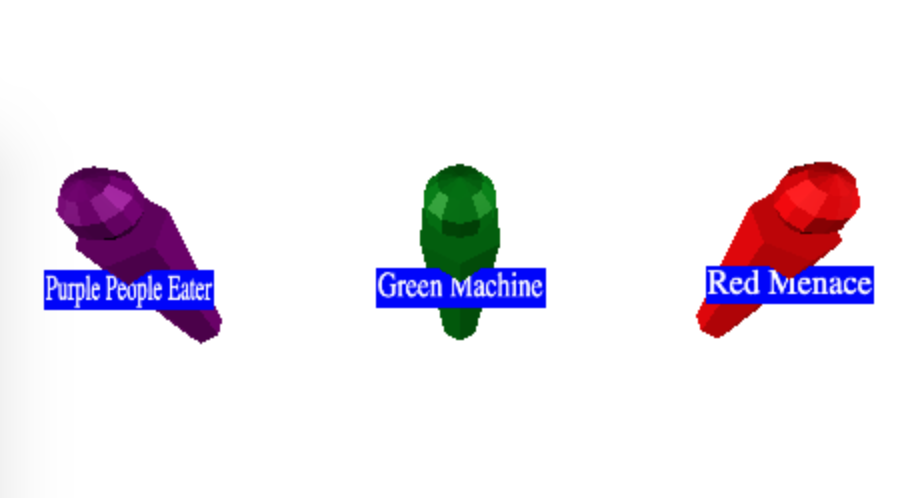

在上一篇文章中，我们使用了CanvasTexture
在角色上制作标签/徽章。有时我们想制作标签或
其他始终面对镜头的事物。 Three.js 提供了 Sprite 和
SpriteMaterial 来实现这一点。
让我们更改关于画布纹理的文章中的徽章示例
使用 Sprite 和 SpriteMaterial
function makePerson(x, labelWidth, size, name, color) {
const canvas = makeLabelCanvas(labelWidth, size, name);
const texture = new THREE.CanvasTexture(canvas);
// because our canvas is likely not a power of 2
// in both dimensions set the filtering appropriately.
texture.minFilter = THREE.LinearFilter;
texture.wrapS = THREE.ClampToEdgeWrapping;
texture.wrapT = THREE.ClampToEdgeWrapping;
- const labelMaterial = new THREE.MeshBasicMaterial({
+ const labelMaterial = new THREE.SpriteMaterial({
map: texture,
- side: THREE.DoubleSide,
transparent: true,
});
const root = new THREE.Object3D();
root.position.x = x;
const body = new THREE.Mesh(bodyGeometry, bodyMaterial);
root.add(body);
body.position.y = bodyHeight / 2;
const head = new THREE.Mesh(headGeometry, bodyMaterial);
root.add(head);
head.position.y = bodyHeight + headRadius * 1.1;
- const label = new THREE.Mesh(labelGeometry, labelMaterial);
+ const label = new THREE.Sprite(labelMaterial);
root.add(label);
label.position.y = bodyHeight * 4 / 5;
label.position.z = bodyRadiusTop * 1.01;
并且标签现在始终面向相机
一个问题是从某些角度来看，标签现在与 字符。

我们可以移动标签的位置来修复。
+// if units are meters then 0.01 here makes size +// of the label into centimeters. +const labelBaseScale = 0.01; const label = new THREE.Sprite(labelMaterial); root.add(label); -label.position.y = bodyHeight * 4 / 5; -label.position.z = bodyRadiusTop * 1.01; +label.position.y = head.position.y + headRadius + size * labelBaseScale; -// if units are meters then 0.01 here makes size -// of the label into centimeters. -const labelBaseScale = 0.01; label.scale.x = canvas.width * labelBaseScale; label.scale.y = canvas.height * labelBaseScale;
我们可以用广告牌做的另一件事是绘制立面。
我们不绘制 3D 对象，而是用图像绘制 2D 平面 3D 对象。这通常比绘制 3D 对象要快。
例如，让我们制作一个带有树木网格的场景。我们会让每一个 树的底部是圆柱体，顶部是圆锥体。
首先我们制作圆锥体和圆柱体的几何形状和材料， 所有的树都会共享
const trunkRadius = .2;
const trunkHeight = 1;
const trunkRadialSegments = 12;
const trunkGeometry = new THREE.CylinderGeometry(
trunkRadius, trunkRadius, trunkHeight, trunkRadialSegments);
const topRadius = trunkRadius * 4;
const topHeight = trunkHeight * 2;
const topSegments = 12;
const topGeometry = new THREE.ConeGeometry(
topRadius, topHeight, topSegments);
const trunkMaterial = new THREE.MeshPhongMaterial({color: 'brown'});
const topMaterial = new THREE.MeshPhongMaterial({color: 'green'});
然后我们将创建一个函数，为树干和顶部分别创建一个 Mesh
树和父树都是 Object3D.
function makeTree(x, z) {
const root = new THREE.Object3D();
const trunk = new THREE.Mesh(trunkGeometry, trunkMaterial);
trunk.position.y = trunkHeight / 2;
root.add(trunk);
const top = new THREE.Mesh(topGeometry, topMaterial);
top.position.y = trunkHeight + topHeight / 2;
root.add(top);
root.position.set(x, 0, z);
scene.add(root);
return root;
}
然后我们将创建一个循环来放置树网格。
for (let z = -50; z <= 50; z += 10) {
for (let x = -50; x <= 50; x += 10) {
makeTree(x, z);
}
}
我们还可以添加一个地平面它
// add ground
{
const size = 400;
const geometry = new THREE.PlaneGeometry(size, size);
const material = new THREE.MeshPhongMaterial({color: 'gray'});
const mesh = new THREE.Mesh(geometry, material);
mesh.rotation.x = Math.PI * -0.5;
scene.add(mesh);
}
并将背景更改为浅蓝色
const scene = new THREE.Scene();
-scene.background = new THREE.Color('white');
+scene.background = new THREE.Color('lightblue');
我们得到一个树木网格
有11x11或121棵树。每棵树都是由 12 个多边形组成 锥体和 48 个多边形树干，因此每棵树有 60 个多边形。 121*60 是7260个多边形。虽然不是很多，但当然还有更详细的 3D 树可能有 1000-3000 个多边形。如果它们各有 3000 个多边形 那么 121 棵树将需要绘制 363000 个多边形。
使用立面，我们可以降低这个数字。
我们可以在某些绘画程序中手动创建一个立面，但让我们编写 一些代码来尝试生成一个.
让我们编写一些代码来将对象渲染到纹理
使用 RenderTarget。我们介绍了渲染到 RenderTarget
在有关渲染目标的文章中。
function frameArea(sizeToFitOnScreen, boxSize, boxCenter, camera) {
const halfSizeToFitOnScreen = sizeToFitOnScreen * 0.5;
const halfFovY = THREE.MathUtils.degToRad(camera.fov * .5);
const distance = halfSizeToFitOnScreen / Math.tan(halfFovY);
camera.position.copy(boxCenter);
camera.position.z += distance;
// pick some near and far values for the frustum that
// will contain the box.
camera.near = boxSize / 100;
camera.far = boxSize * 100;
camera.updateProjectionMatrix();
}
function makeSpriteTexture(textureSize, obj) {
const rt = new THREE.WebGLRenderTarget(textureSize, textureSize);
const aspect = 1; // because the render target is square
const camera = new THREE.PerspectiveCamera(fov, aspect, near, far);
scene.add(obj);
// compute the box that contains obj
const box = new THREE.Box3().setFromObject(obj);
const boxSize = box.getSize(new THREE.Vector3());
const boxCenter = box.getCenter(new THREE.Vector3());
// set the camera to frame the box
const fudge = 1.1;
const size = Math.max(...boxSize.toArray()) * fudge;
frameArea(size, size, boxCenter, camera);
renderer.autoClear = false;
renderer.setRenderTarget(rt);
renderer.render(scene, camera);
renderer.setRenderTarget(null);
renderer.autoClear = true;
scene.remove(obj);
return {
position: boxCenter.multiplyScalar(fudge),
scale: size,
texture: rt.texture,
};
}
有关上述代码的一些注意事项：
我们正在使用此代码上方定义的视野 (fov)。
我们正在计算以同样的方式包含树的盒子 我们在有关加载 .obj 文件的文章中做到了 有一些小的变化。
我们再次调用frameArea改编有关加载.obj文件的文章。
在这种情况下，我们计算相机需要距离物体多远
给定其视野以包含该对象。然后我们将相机定位在 -z 距离处
从包含对象的盒子的中心开始。
我们将想要适合的大小乘以 1.1 (fudge) 以确保树适合
完全在渲染目标中。这里的问题是我们使用的尺寸
计算物体是否适合相机的视野没有考虑
物体的边缘最终会倾斜到我们区域之外
计算出来的。我们可以计算如何使盒子 100% 适合，但这会
也会浪费空间，所以我们只是捏造它。
然后我们渲染到渲染目标并从中删除对象 现场。
重要的是要注意我们需要场景中的灯光，但我们 需要确保场景中没有其他东西。
我们还需要不在场景上设置背景颜色
const scene = new THREE.Scene();
-scene.background = new THREE.Color('lightblue');
最后我们制作了返回它的纹理以及我们返回的位置和比例 需要制作立面，使其看起来位于同一个位置。
然后我们制作一棵树并调用此代码并将其传入
// make billboard texture const tree = makeTree(0, 0); const facadeSize = 64; const treeSpriteInfo = makeSpriteTexture(facadeSize, tree);
然后我们可以制作立面网格而不是树模型网格
+function makeSprite(spriteInfo, x, z) {
+ const {texture, offset, scale} = spriteInfo;
+ const mat = new THREE.SpriteMaterial({
+ map: texture,
+ transparent: true,
+ });
+ const sprite = new THREE.Sprite(mat);
+ scene.add(sprite);
+ sprite.position.set(
+ offset.x + x,
+ offset.y,
+ offset.z + z);
+ sprite.scale.set(scale, scale, scale);
+}
for (let z = -50; z <= 50; z += 10) {
for (let x = -50; x <= 50; x += 10) {
- makeTree(x, z);
+ makeSprite(treeSpriteInfo, x, z);
}
}
在上面的代码中，我们应用定位立面所需的偏移量和比例，以便它 出现在原始树出现的相同位置。
现在我们已经完成了树立面纹理的制作，我们可以再次设置背景
scene.background = new THREE.Color('lightblue');
现在我们得到了树立面的场景
与上面的树木模型相比，您可以看到它看起来非常相似。 我们使用了低分辨率纹理，只有 64x64 像素，因此外墙是块状的。 你可以提高分辨率。通常，外墙仅在远处使用 当它们相当小时，因此低分辨率纹理就足够了，并且 它节省了绘制只有几个像素大的详细树木的时间 很远。
另一个问题是我们只能从一侧查看树。这常常是 通过渲染更多立面来解决，例如从对象周围的 8 个方向 然后根据相机的方向设置显示哪个立面 正在查看外观。
是否使用外观取决于您，但希望这篇文章 给了您一些想法，并建议了一些解决方案（如果您决定使用它们）。